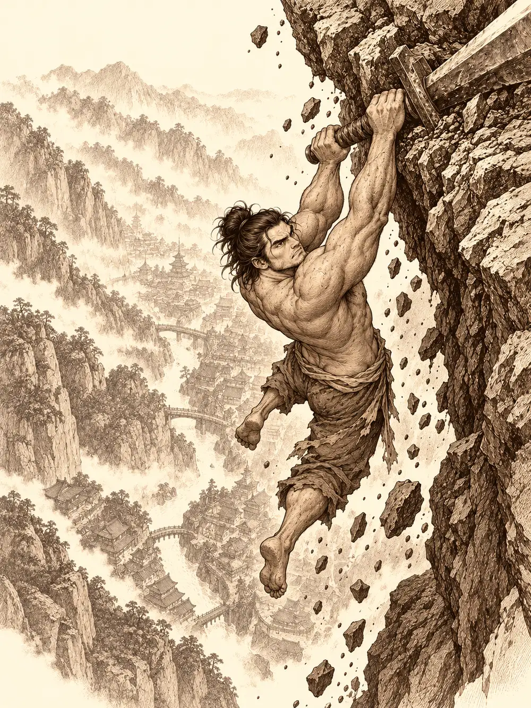

Capítulo 120
El hilo maldito
Libro VIII · El hilo maldito
Gur llevaba un buen rato plantado delante de Gluglu sin abrir la boca. El hombre pez levantaba el brazo izquierdo, lo bajaba, levantaba el derecho, daba una vuelta sobre sí mismo y se sentaba. El medio orco no movía un músculo; tenía el ceño fruncido como quien intenta enhebrar una aguja con los ojos. Cuando Calista le preguntó qué estaba haciendo, él la miró sin despegar los labios y ella oyó su voz dentro de la cabeza.
He aprendido a hacerlo.
La emisaria se puso en pie de golpe. Que aquel bruto le hablara a la mente sin permiso le pareció una invasión intolerable. Gur le explicó, muy serio, que él no lanzaba hechizos: él le daba al coco.
La puerta se abrió y entró Palayer, tiznada de polvo hasta las rodillas. Había recibido la carta de Gelbreak en el sur, donde seguía combatiendo, y como los portales de Sho no funcionaban había tenido que subir por carretera, en el carro de unos mercaderes. Gelbreak le habló de las marcas. Calista desplegó sobre la mesa un mapa del mundo. Había pasado noches enteras leyendo sobre los dioses drow, sobre Lolth y sobre la hija que le había dado la espalda, y había sacado una idea: si las marcas venían de una servidora de Lolth, quizá Eilistraee quisiera ayudarlas. Señaló un punto al oeste de Brunami, junto a la costa.
"El Bosque de la Luna. Dicen que allí la luna se refleja entre los árboles y que a veces se oye cantar a la diosa. No se me ha ocurrido otra cosa".
"Mi diosa está a favor de ayudar a quien tiene problemas con Lolth", dijo Palayer. "Vale la pena intentarlo".
Calista le contó los sueños con la matriarca, el lugar donde solo había hilos de seda de araña tendidos como un mar. Gelbreak le puso nombre: los Pozos Demoníacos. La armadura de la paladina tintineó un instante. Luego el drow dejó sobre la mesa un pergamino de portal, poderoso y raro, de los que valen una fortuna. Ninguno de ellos sabía usarlo. Maroxi llevaba una criatura en las entrañas y a Gelbreak no le parecía compañía para presentarse ante una diosa; quedaba el mago con aspecto de lagarto que los había ayudado hacía poco.
El Mapache Feliz tenía en la puerta dos bolitas que sonaban al abrir y un letrero con dos mapaches bailando con botellas. Ikari saltaba por encima de la barra llenando vasos, y Ginoyama, un mago de escamas y rasgos de dragón, discutía con él a voces escupiendo fogonazos. Al ver a los cazadores soltó una llamarada de alegría que les chamuscó las pestañas y pidió sake para todos.
Calista se subió a la barra. Ya no llevaba la sonrisa de siempre. A ella y a Banzo se les acababa el tiempo para librarse de algo que podía matarlos, dijo, y ellos estaban allí bebiendo. Bajó, pegó su frente a la del mago y lo agarró de la pechera.
"Necesitamos un mago. Tú eres un mago".
Ginoyama le sopló humo a la cara y la apartó de un empujón en el pecho.
"Chiquilla, esto no son formas. Yo no le debo nada a nadie".
Notó entonces una punta fría en la espalda, hundiéndose apenas en la piel.
"¿Vas a ayudarnos y a dejar de hacer el estúpido?", susurró Gelbreak.
Al mago empezó a salirle fuego por la comisura de los labios. Banzo, que al ver el empujón había buscado antes que nada la reacción del drow, se metió en medio. Puso una mano en el hombro de Gelbreak, admitió que se les estaba yendo la cabeza a todos, se quitó el guante y le enseñó la palma a Ginoyama. Calista hizo lo mismo. Eran puntitos diminutos que, mirados de cerca, tenían patas.
"Esto huele a elfo oscuro", dijo el mago, y se le fue la borrachera de la cara. "Ahora entiendo por qué tu amiga está tan nerviosa".
Gelbreak guardó el estoque. Calista pidió perdón por haber perdido las formas y se lo contó todo. Ginoyama se recolocó la túnica, soltó un par de chispas y pidió dos botellas para el camino; el drow le dijo que bastaba con que abriera el portal.
"Sí, hombre, y perderme la fiesta. Os ayudo porque quiero, no porque me metáis prisa".
Lo abrió fuera de la capital. El paso era de ida y no aguantaría mucho; para volver confiaban en el traslado mágico de Gelbreak. Antes de cruzar, el drow les dijo a Gur y al mago que no los obligaba a acompañarlos, pero que su ayuda podía venirles bien. Ginoyama se echó a reír: por fin pedía algo.
El Bosque de la Luna era un pinar de un verde casi negro. El portal se cerró a sus espaldas. Era de noche, hacía frío y la luna llena colgaba enorme sobre las copas; alrededor se oían aullidos y ramas que se movían sin viento. Los espíritus que acompañaban a Banzo desde niño se alejaron a explorar y volvieron hablando de criaturas que bailaban y de un altar cerca de un acantilado sobre el mar. Calista buscó el rumbo en las estrellas, se equivocó y se corrigió. Gur, con la nariz casi pegada al barro, encontró huellas de lobo, otras de algo que caminaba como un lobo a dos patas y unas terceras tan leves que parecían de alguien que apenas rozara el suelo. Siguieron esas.
El bosque fue aclarando y Calista olió la sal del mar. Al borde del acantilado había un altar y, a su lado, dos estatuas de una elfa de piel negra y cabello blanco, desnuda, detenida en un paso de danza. Las velas ardían con llama blanca, del color de la luna.
Gelbreak se adelantó con Palayer y, con un siseo de acero, cuatro sombras salieron de los matorrales. Ginoyama sintió a alguien pasar rozándole el costado. Cuando volvieron a mirar había cuatro elfas oscuras con armaduras de cuero, y cuatro espadas curvas que brillaban como plata descansaban en el cuello del drow. Hablaban en la lengua de la Infraoscuridad; Palayer entendió la araña ya está aquí. Una de ellas señaló el colgante sagrado de la paladina.
"Hola, hermanas. No venimos a buscar problemas. Venimos a buscar el favor de nuestra diosa".
No podía responder por Gelbreak, dijo, pero se ocuparía de él si daba problemas. Calista dio un paso al frente y mostró la palma. Tres espadas bajaron; la cuarta siguió en el cuello del drow. La emisaria rozó con permiso a una de las guardianas, se llevó dos dedos a los labios y la magia le abrió aquel idioma. Decían que las marcas eran peligrosas y que del drow no se fiaban.
"Él no está con las arañas", les contestó en su lengua. "Las únicas arañas que hay aquí son las que nos persiguen".
"Tendrás que responder por ellos, hermana", le dijo a Palayer la que parecía mandar. "Demuestra que eres una de nosotras".
Sobre el altar había un libro de tapas plateadas. Palayer lo abrió: las páginas estaban en blanco, pero al pasarlas se iluminaron y fueron apareciendo notas musicales. Sabía que su diosa lo era de la danza y del canto. Lo que no sabía era leer aquellas notas. Había perdido muchas cosas con el tiempo, confesó, avergonzada.
"El libro ha reaccionado contigo", contestó la guardiana. "No todas sabemos cantar".
La sacerdotisa tomó del altar dos espadas de filo plateado y se las ofreció a Calista y a Banzo. Había que bailar con ellas para que Eilistraee escuchara. Y había que bailar desnudos.
Banzo abrió mucho los ojos y se dio la vuelta para no mirar a Calista. Ella preguntó si de verdad era necesario y la elfa asintió. Lo había leído en los libros; había creído que era una exageración. Se fue desvistiendo despacio, roja hasta las orejas, porque para ella aquello rozaba lo deshonroso.
"Yo no te voy a mirar", le dijo Banzo de espaldas, quitándose los pantalones. "Vamos a intentarlo y a hacerlo bien".
A Gur, que seguía sin poder pasar, le habían cerrado el paso con la hoja plana de una espada, como se aparta a un perro, y se había quedado dormido en el suelo. Ginoyama descubrió que dos guardianas bailaban a su alrededor rozándole la espalda con las espadas, decidió que por fin estaba entre gente simpática, echó un trago, se desnudó y bailó con ellas.
La sacerdotisa empezó a cantar leyendo el libro, con una voz larga y limpia, y Palayer sintió la llamada en el pecho. Antes de dejarse ir le enseñó a Banzo unos pasos y le dio ánimos con un gesto. El goliat la imitó como un flamenco muy lento, con la espada a veces un poco adelantada. Calista empezó torpe, sin saber dónde poner los ojos; luego oyó la música y se acordó de las fiestas en el castillo del rey dragón, cuando danzaba con abanicos ante la corte. Abrió distancia hasta formar un triángulo con sus compañeros, cerró los ojos y bailó con la espada como antes con los abanicos. Palayer giraba con la cara vuelta hacia la luna.
Al terminar bajó del cielo una luz tan blanca que cegaba. Las sacerdotisas sonrieron.
"Sigues gozando de su favor, hermana, y veo que acepta a tus compañeros".
La última espada se apartó del cuello de Gelbreak. Se vistieron, despertaron a Gur con dos pataditas y entraron todos en la luz.
La luz se los tragó y los soltó en una cueva. Palayer, Banzo y Calista reconocieron aquella clase de lugar con un escalofrío: cuevas húmedas, setas que daban la única claridad, el mundo de debajo del mundo. Pero no hacía el frío de la Infraoscuridad que conocían, sino un calor sofocante, de verano. Las setas brillaban blancas y la piedra de las paredes relucía como la plata.
Calista le dio a Banzo la visión en la oscuridad con un pergamino y luego les habló a todos.

"Estamos en un lugar extraño, pero somos bastantes. Sé que hoy he estado más tensa. Sigo poniendo mi vida en vuestras manos, así que tened cuidado, y haced lo que mejor se os da a los cazadores".
Cerró los ojos, buscó con la piel el agua y oyó un torrente al fondo. Llegaron a una gran cueva con un río, una cascada y, lo más extraño, pinos de un verde oscuro creciendo bajo tierra. Sobre un lago caía otra luz blanca, igual a la del altar. Iban hacia ella cuando Calista notó temblores bajo los pies, cada vez más cerca.
"¡Apartaos!".
Ginoyama se escurrió entre dos setas y se quedó quieto como una lagartija. Gur descargó un mazazo contra el suelo y la piedra sonó a metal; Banzo se puso a dar pisotones para atraer lo que viniera a donde pudieran verlo. La roca se abrió y emergió un gusano púrpura enorme que se tragó a Gur de un bocado y derribó a Banzo de un coletazo. Del suelo salió un segundo.
Calista llenó la cabeza del primero, que no tenía ojos, de ruido de patas de araña por todas partes, y luego gritó una orden que dejó al otro paralizado.
"Criatura inmunda. Vuelve a la tierra de la que saliste".
Gelbreak hizo que Banzo y Palayer se movieran más deprisa que nadie. Ginoyama sembró relámpagos. Palayer golpeaba con la fuerza de su diosa. Banzo trepó al lomo del gusano que tenía dentro a Gur, intentando abrirle camino desde fuera, y notó que la carne se le calentaba bajo los pies hasta quemarle las plantas. Por la espalda del monstruo asomó un martillo en llamas y, detrás, la cabeza del medio orco. El gusano se desplomó muerto y Banzo se fue al suelo con él. Se levantó dolorido y fue a rematar al otro.
Nadie había muerto. Calista curó a Gelbreak y luego a Banzo.
"Tú también has estado bien, grandote".
Gur había descubierto que su fuego había dejado dentro del gusano mucha carne bien churruscada. Comió y guardó para el camino toda la que pudo.
El lago era muy profundo. Calista les dio a todos el don de caminar sobre el agua, y Gelbreak apartó de un tirón a Gur y a Ginoyama: a hablar con una diosa no se iba en tropel. Él tampoco pensaba ir.
"No voy a fiarme de un ser poderoso que puede dominarme cuando quiera".
Banzo le pidió que viniera. No lo amenazó; se lo pidió, y le dijo que no podía vivir siempre mirando a su espalda. Para sorpresa de todos, Gelbreak cedió. El medio orco y el mago se quedaron en la orilla, y Gur se fue derecho a uno de aquellos pinos con el hacha de faena.
Bajo la superficie iluminada subieron dos ojos brillantes, luego una cabeza de piel negra y un cabello plateado que flotaba como una nube. Eilistraee salió del agua bañándose, desnuda, y los miró.
"Vaya, hermana. No esperaba encontrarme a nadie por aquí. ¿A qué has venido?".
Palayer se inclinó y le habló de la maldición de una matriarca de los que seguían a Lolth. A Banzo le pasó lo mismo que ante la Reina Cuervo: las rodillas se le doblaron solas. Le explicó que se habían metido en los asuntos oscuros de una matrona por proteger a un amigo. Calista vio en el agua el reflejo de la diosa junto al suyo.
"Mi amigo tiene razón. Nos inmiscuimos en asuntos ajenos por proteger a alguien y hemos acabado así".
Eilistraee se agachó y tomó sus manos; la del goliat parecía la de un niño en la suya.
"Esto es más que una maldición. Las marcas os conectan con el plano de Lolth. Parte de vuestras mentes está encerrada allí, y cuanto más tiempo permanezca, más os irán destruyendo, poco a poco. Debéis liberarlas de la red de los Pozos Demoníacos". Se volvió hacia Palayer. "No todas las espadas cortan esas telas. Solo la luz puede hacerlo. Forjarás una espada de plata, hermana, y para ello necesitaréis plata bañada en la luna de Selûne, el corazón de una gran bestia lunar y", sonrió, divertida, "una lágrima de una criatura de la Infraoscuridad. Volveréis aquí a forjarla. Después vendrá lo más difícil: entrar en el plano de mi madre. Allí estaréis solos. No podré ayudaros. Solo la luz de la espada os guiará".
Palayer preguntó cómo volver hasta ella. Siguiendo la luna, le dijo.
Banzo, todavía de rodillas, pidió otro favor: que la dama de la luna ayudara a un hermano a encontrar la libertad. Gelbreak lo agarró del brazo y le ordenó callar. La diosa miró al drow e hizo una pequeña mueca.
"Vuestro amigo ya tiene un camino. Yo no estoy en él".
Calista levantó entonces la vista. Le preguntó si sabía dónde estaba su madre, porque ella, en aquel lugar de telarañas, no había sentido ninguna presencia. Y miró a Banzo. La cara del goliat contestó por él: él sí la había notado.
A Eilistraee se le endureció el rostro. Mientras se hundía en el lago no apartó los ojos de Gelbreak.
"Entonces conseguid esa espada lo antes posible. Sabréis más de mí".
Calista soltó todo el aire que había contenido. Banzo le dijo a Gelbreak que lo sentía, que tenía que preguntarlo, y el drow se marchó hacia la orilla sin mirarlo. Palayer recogía agua del lago donde se había bañado su diosa y se mojaba con ella la cara.
"¿Ves como no ha intentado controlarte?", le dijo Calista al drow.
Él se volvió.
"¿Alguno de vosotros le ha preguntado el precio de este pacto?".
Palayer contestó que ella no necesitaba ningún pacto: ya la servía antes. Gelbreak siguió andando.
En la orilla, Gur se había hartado de carne de gusano y de talar aquella madera, había compartido la botella de Ginoyama y bailaba desnudo, imitando lo que había visto en el acantilado. El mago bailaba a su lado, bastante peor. Del hacha de faena quedaba un filo mellado que habría que llevar al herrero.
Antes de irse, Gelbreak preguntó si aquella piedra brillante era plata. Lo parecía y no lo era; y, aunque lo hubiera sido, no era plata de la luna de Selûne. El drow los envolvió en su magia y aparecieron de golpe en la base de Sho.
"Intentaremos encontrar esto", dijo, malhumorado, y salió.
Calista dio las gracias a Gur y a Ginoyama y fue tras él. El mago se fue a seguir bebiendo. Gur cargó con la carne de gusano y se fue a una taberna a que se la guisaran en una cazuela enorme para repartirla.
Banzo durmió aquella noche en un claro del bosque y por la mañana bajó al lago a lavarse. Antes de meter las manos se quedó mirando su reflejo. Plata de la luna de Selûne, corazón de bestia lunar, lágrima de la Infraoscuridad. El reflejo se llenó de burbujas y una rana le saltó a la cara, se le subió a la cabeza y se convirtió en Arwen.
Pasaron la mañana juntos. Kurobane los observaba desde un árbol sin esconderse; tenía la voz de quien llevaba días sin dormir y dijo que le vendría bien la naturaleza. Subieron hacia un peñasco que dominaba la ciudad. Por el camino Arwen les contó que las plantas estaban cansadas de un medio orco que iba con el hacha a cortarlas, y Kurobane prometió que hablarían con Gur. Luego, temblando un poco, le pidió a la niña que si lo veía raro en los días siguientes avisara a los cazadores.
"La última vez que dejé ese monasterio estaba en llamas".
Arwen se le sentó en el regazo y le dio un abrazo. Más tarde, el ninja le pidió a Banzo que lo acompañara, porque iba a volver a un lugar de su pasado y necesitaba un guerrero fuerte. Banzo le dijo que allí estaría.
En una parada, el goliat sacó un trozo de gusano púrpura que llevaba guardado, lo miró y lo tiró lejos; no pensaba darle a la niña nada que pudiera enfermarla. Le habló de la esfera que se había tragado, del poder que su cuerpo no iba a resistir mucho tiempo, de toda la gente que la quería.
"Danifae darme una sorpresa", contestó Arwen, encantada. "Y querer que Arwen dé un regalo de una amiga suya a tito Gelbreak".
Banzo y Kurobane se miraron. El goliat le explicó que habría gente mala disfrazada de buena, gente que sería amable para conseguir algo de ella, y que tendría que aprender a distinguirla sin que nadie la influyera. Se tocó la cabeza y el pecho.
"Aquí y aquí. No siempre acertamos. Así se aprende".
La esfera siguió donde estaba.
Desde el peñasco se veía Sho entera. Banzo se asomó, se hizo bocina con las manos y soltó un eructo enorme. Arwen lo imitó con todas sus fuerzas, y la tierra respondió: un temblor recorrió el peñasco y vieron sacudirse la ciudad. La roca se partió bajo sus pies. Banzo lanzó a la niña hacia Kurobane, y el ninja, al atraparla, alcanzó a ver una sonrisa en la cara del goliat antes de que desapareciera con el derrumbe.
Arwen se convirtió en halcón y se lanzó al vacío. Unos metros más abajo encontró a Banzo colgado de la Espada del Campeón, clavada en la roca viva, con los pantalones a medio caer. La niña hizo crecer vegetación para sujetarlo, llamó a un elefante y a varios gorilas, se volvió gorila ella misma y formaron una cadena desde el borde.
"Uh, uh, uh", dijo la gorila Arwen tendiéndole la mano.
"Uh, uh, ah, ah", contestó Banzo, y se la dio.
Lo subieron entre todos. Kurobane, blanco como la cal, respiró por fin. Banzo se encaramó al lomo del elefante y decidió que la prueba de valor que tenía preparada podía esperar a otro día.
"Arwen, ¿puedo llevarme a este pequeñín hasta la base?".
"Claro. Trompi es todo tuyo".
Volvieron así, el ninja delante y en silencio, el goliat a lomos del elefante con la espada al hombro y la niña dando saltos a su lado.